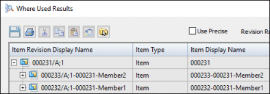

Using Family of Assemblies in the Teamcenter-managed environment
The integration of Family of Assemblies in the Teamcenter-managed environment enables you to create product variants in Solid Edge and save those members to Teamcenter for use by downstream consumers.
Family of assembly members are uniquely identified in Teamcenter when they are published. Publishing the members creates individual items in Teamcenter that are identified by a unique Item ID, Revision and Name. Use the Alternate Assemblies Table → Publish Members command to publish family of assembly members to Teamcenter. You can publish all members simultaneously, publish members individually, or choose to not publish members at all. Publishing the members results in BOM accuracy, consistent visualization, and a visually correct preview.
Characteristics of published members
Each published member is saved to its own Object. The published member:
-
Can be defined by an Item Type that can differ from the source.
-
Has its own set of properties that can participate in property synchronization.
-
Can take advantage of naming rules and multi-field keys (MFK).
You can use the Teamcenter preference SEEC_Property_AssemblyFamilyMember_Name to specify the pattern used to generate the initial value of the Item Name when a new Family of Assembly member is published. By default, the member name is <Source's Item Name>-<Solid Edge Member Name>.
For details, see the Teamcenter Integration for Solid Edge (SEEC) Guide for Users and Administrators.
Although a separate Item and Revision is created for each published member, they are complementary and belong together as a single unit.
Data model
The relation Solid Edge Assembly Family Source connects the member to the source. Another relation, Solid Edge Assembly Family Members, connects the source to the member. To visualize the related documents in the Teamcenter rich client, display these relations and then expand them in My Teamcenter.
Creating content
To use Family of Assemblies in the Teamcenter-managed environment:
-
Create an assembly.
-
Convert the assembly to a FOA with at least two members.
-
Finalize the member names before they are used.
-
Publish the members to create individual items in Teamcenter.
-
Use the published member(s) in a design or draft.
After a member is used in an assembly or documented on a draft, it must not be renamed. Renaming a published member that is used creates a broken link.
Modifying content
When you open an assembly family with published members, the source and all published members are checked out to you. If write access is not available for the source and all members, you are notified and the assembly is opened read-only.
Creating drafts of published Family of Assembly Members
When you create a new draft of a published Family of Assembly Member, you can choose to:
-
Save the new draft to the revision of the Source
When a draft is saved, the Item ID of the FOA Source is populated and the saved draft is linked to the FOA Source.
-
Save the new draft to the revision of the published Member.
When a draft is saved, the Item ID of the FOA member is populated, and the saved draft is linked to the FOA member.
Note:The Save As command will not copy a draft saved to the revision of the published Member. To copy the draft using Save As, save the draft to the Revision of the Source, or a separate Item.
The default option is set in the Solid Edge Options → Manage → Assembly tab.
Follow the steps in Customize the command ribbon to add the corresponding commands Save to Source and Save to Member to your Teamcenter command ribbon for the Draft environment.
Creating new workflows in Solid Edge
When you create a new workflow using the New Workflow Process command, the entire assembly family is included in the workflow so that they can be released together.
Revising published FOA members
The assembly file is managed in the Item Revision of the Family of Assembly source. The assembly family is represented by a single file even though published members have their own Item\Revision. You cannot revise a single member independently of the source. Therefore when you run a workflow against the assembly family, the source and all the members participate in the workflow and receive the same status, preparing the assembly family for release and subsequently, revise.
When you revise a Family of Assemblies, the entire family (source and published members) is included in the revision. Even though they are revised together, they have independent properties so the Revision value can be different. This behavior is the same in Solid Edge and Structure Editor.
Creating an accurate BOM for product structures that use nested FOAs
If you create a product structure where a FOA member uses a FOA member, and you want to have that structure be BOM-accurate, start from the bottom, open the FOA assembly and publish it to Teamcenter. Then, open the next higher level and its member and publish it. Continue this process until all FOAs have been published and saved. This process creates a new Item for the member and uses the previously published member and its associated structure.
Using Save-As with published FOA members
The Save As command affects only the source and its direct documents. Members are not copied to new Items.
Where Used with published FOA members
In Solid Edge, when you work with Family of Assemblies, you always open a FOA member. However, the results of the Where Used command displays the member in context of its source. The source is displayed at the top of the structure with members below it.

For additional information, see Family of Assemblies in Structure Editor.
How do I
Create a new alternate position assemblyCreate a new family of assemblies
Publish family of assembly members to Teamcenter
Define a list of alternate components for a part
Save an alternate assembly member as a separate assembly
Examples: Dynamically moving a part in an assembly
Learn more
Alternate AssembliesAlternate assemblies impact on Solid Edge functionality
Look up more details
Save to Source commandSave to Member command
Define Alternate Components Dialog Box
Define Alternate Component command
Edit Definition command
Alternate Member Dialog Box
Assembly Member dialog box
New Member dialog box (Family of Assemblies tab)
Alternate Assemblies dialog box
Dynamic Configuration dialog box
Family of Assemblies tab
Alternate Assemblies Table dialog box
Save Member dialog box